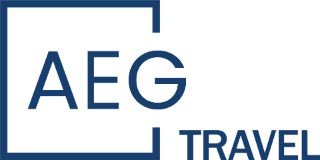

Guide the traveller
Collect answers and documents through a guided journey configured for the application.
Agency case study · Canada pilot

Working with AEG on a Canada visa pilot: collect documents once, let AI prepare the information, and keep the agency in control of the final review.
Pilot preparation is underway. The MOU is expected on 16 November 2026; signing and pilot outcomes are not yet confirmed.
The application burden
Scope varies with the applicant. These figures describe application complexity, not AEG’s processing volume.
Watch the workflow · 38 seconds
The Canada explainer shows how collection, extraction, validation and form preparation connect—then how Smart Bridge is intended to carry reviewed information and documents into the visa portal.
Illustrative product explainer with sample data. It is not an AEG production recording or evidence of measured pilot results. Canada portal automation is part of the pilot scope to validate.
The AEG pilot
The pilot focuses on the repetitive work around a complex Canada application, while AEG’s visa team retains responsibility for review and submission.
Collect answers and documents through a guided journey configured for the application.
Extract available document data, check consistency and surface missing details.
Reuse extracted information in the form and ask for the answers that remain.
AEG reviews the file. The pilot will validate the Canada portal handoff and the agency’s final submission step.
Pilot target
The product team’s working goal is to reduce manual inputs from over 250 to around 100 by reusing document information and structuring the questions that remain.
A design target to test in the pilot—not a measured reduction achieved by AEG.
remaining inputs, depending on the applicant and the documents supplied
How much information can be reused from documents, what the traveller still needs to answer, what the reviewing team needs to correct, and how the supported portal handoff performs.
Results and AEG’s feedback will be added after the pilot. Today, this story describes the workflow being prepared and the questions it will test.
Show us the destinations, traveller profiles and document requirements your agency handles. We’ll map the preparation flow and confirm the scope for your team.